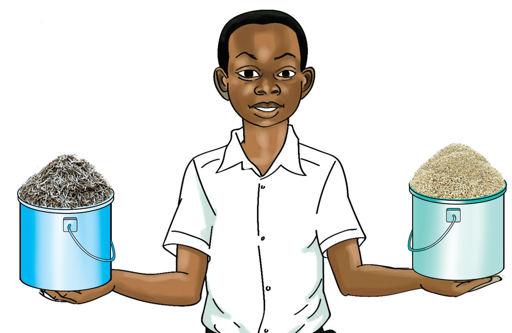

Kiganja cha mkono kimetumika kupima urefu wa meza. Urefu wa viganja vya mikono ya watu tofauti havilingani. Kipimo hiki sio rasmi kwa sababu hakitoi majibu yanayofanana. Vipimo vingine visivyo rasmi vya kupima urefu ni unyayo wa mguu. Vilevile, vidole vya mikono, hatua za miguu na urefu wa mikono hutumika.
Kupima uzito kwa kutumia vipimo visivyo rasmi
Chunguza Kielelezo namba 1, kisha fanya Kazi namba 2.

SAYANSI MEMKWA 2.indd 78
21/08/2021 11:22